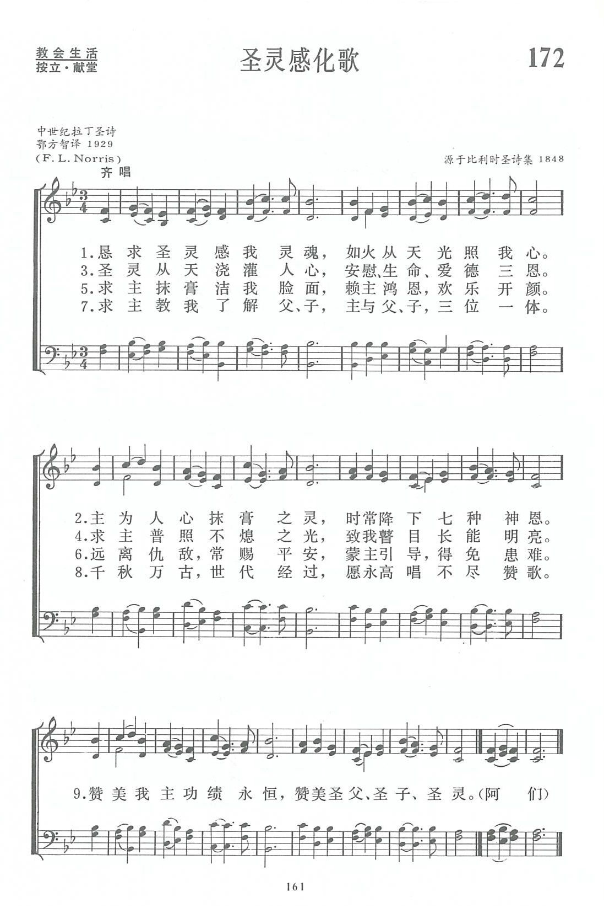
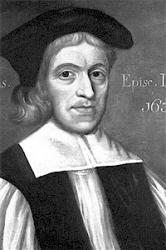

|
|
|
|
1 Come, Holy Ghost, our souls inspire
2 Thy blessed unction from above
3 Teach us to know the Father, Son,
4 Praise to thine eternal merit,
|
恳求圣灵感我灵魂 如火从天光照我心 主为人心抹膏之灵 时常降下七种神恩 圣灵从天浇灌人心 安慰生命爱德三恩 求主普照不熄之光 致我瞽目长能明亮 求主抹膏洁我脸面 赖主鸿恩 欢乐开颜 远离仇敌 常赐平安 蒙主引导 得免患难 求主教我了解父 子 主与父 子三位一体 千秋万古 世代经过 愿永高唱不尽赞歌 https://w.readbible.cn/song/17046.html 赞美我主功绩永�� 赞美圣父 圣子 圣灵 阿们
|
|
https://www.zanmeishige.com/tab/13845.html?songbook=1&index=172
 Come, Holy Ghost, Our Souls Inspire
|
|
|
|
|


懇求聖靈 Come, Holy Ghost, Our Souls Inspire - 第十五屆聖詩頌唱會 https://youtu.be/Zh-xiwPI-rk - 讚美詩(新編)172.聖靈感化歌
https://youtu.be/g-fZVugsWQQ -
Come Holy Ghost Our Souls Inspire (Tune: Veni, Creator Spiritus-4vv) [with lyrics for congregations] https://youtu.be/WjKcc8IcxIo https://youtu.be/SPVuLOXh8vE
Come, Holy Spirit, Our Souls Inspire
Hymn Information
Hymn Story/Background
Author Information
Winkel on the Rhine, February 4, 856), son of one Ruthard, was born probably at Mainz, about 776. At an early age he was sent to the Monastery of Fulda to receive a religious education. In 801 he was ordained Deacon, and the following year he went to the monastic school of St. Martin at Tours to study under Alcuin, a celebrated teacher of that time, who pave to Hrabanus the name of Maurus to which Hrabanus added Magnentius. On his return to Fulda in 804 he became the head of the school connected with the Monastery. Towards him Ratgar the abbot showed great unkindness, which arose mainly from the fact that Ratgar demanded the students to build additions to the monastery, whilst Hrabanus required them at the same time for study. Hrabanus had to retire for a season, but Ratgar's deposition by Ludwig the Pious, in 817, opened up the way for his return, and the reopening of the school In the meantime, in 814, he had been raised to the Priesthood. Egil, who succeeded Ratgar as abbot, died in 822, and Hrabanus was appointed in his stead. This post he held for some time, until driven forth by some of the community. In 847, on the death of Archbishop Otgar, Ludwig the younger, with whom Hrabanus had sided in his demand for German independence as against the imperialism of his elder brother Lothar, rewarded him with the Archbishopric of Mainz, then the metropolitan see of Germany. He held this appointment to his death. He was buried first in St. Alban's, Mainz, and then, during the early days of the Reformation, in St. Maurice, Halle, possibly because of the opposition he is known to have made to the doctrine of Transubstantiation.
With German historians Hrabanus is regarded as the father of the modern system of education in that country. His prose works were somewhat numerous, but the hymns with which his name is associated are few. We have the "Christe sanctorum decus Angelorum”; “Tibi Christe, splendor Patris”; and the "Veni Creator Spiritus”; but recent research convinces us that the ascription in each case is very doubtful; and none are received as by Hrabanus in Professor Dümmler's edition of the Carmina of Hrabanus in the Poetae Latini aevi Carolini, vol. ii. 1884. Dümmler omits them even from the "hymns of uncertain origin."

son of Giles Cosin, of Norwich, was educated at the Free School of that city and Caius College, Cambridge. Taking Holy Orders he became (besides holding minor appointments) Prebendary of Durham Cathedral; Rector of Brancepeth, 1626; Master of Peterhouse, Cambridge, 1634, and Vice-Chancellor of the University and Dean of Peterborough, 1640. He suffered much at the hands of the Puritans; but after the Restoration in 1660, he became Dean and then Bishop of Durham. His translation of the Veni Greater Spiritus (q. v.), 44. “Come, Holy Ghost, our souls inspire," was included in his Collection of Private Devotions, 1627.
Composer Information
Scripture References
- · · · · · ·
Confessions and Statements of Faith References
Further Reflections on Confessions and Statements of Faith References
It is difficult to isolate certain confessional themes in each song about the Holy Spirit. Rather, there are several themes that are woven together in nearly all of these songs. The Holy Spirit is identified as one with the Father and the Son in the Holy Trinity; we plead for the coming and indwelling of the Spirit in our lives; the Spirit’s work is evident in creation and in God’s people throughout redemptive history; the Spirit calls and empowers the church for mission; and the Spirit is the source of power, fruit, and hope. These themes are expressed in confessional statements such as these:
- Heidelberg Catechism, Lord’s Day 20, Question and Answer 53 testifies, “…the Spirit, with the Father and the Son, is eternal God.” In addition, the Spirit “makes me share in Christ and all his benefits, comforts me, and will remain with me forever.”
-
Our World Belongs to God has helpful references to these multiple themes
of the Spirit’s work and ministry.
- “Jesus becomes the baptizer, drenching his followers with the Spirit, creating a new community where Father, Son and Spirit make their home” (paragraph 28)
- “The Spirit renews our hearts and moves us to faith… stands by us in our need and makes our obedience fresh and vibrant” (paragraph 29).
- “God the Spirit lavishes gifts on the church in astonishing variety…equipping each member to build up the body of Christ and to serve our neighbors.”
- “The Spirit gathers people from every tongue, tribe and nation into the unity of the body of Christ” (paragraph 30).
- “Men and women, impelled by the Spirit go next door and far away…pointing to the reign of God with what they do and say” (paragraph 30).
-
Our Song of Hope also contributes very clearly regarding the
Spirit’s work:
-
“The Holy Spirit speaks through the Scriptures…has inspired Greek and Hebrew words, setting God’s truth in human language, placing God’s teaching in ancient culture, proclaiming the Gospel in the history of the world” (stanza 6).
- “The Holy Spirit speaks through the church, measuring its words by the canonical Scriptures…has spoken in the ancient creeds, and in the confessions of the Reformation” (stanza 7).
- “The Spirit sends [the church] out in ministry to preach good news to the poor, righteousness to the nations, and peace among all people” (stanza 16).
- “The Holy Spirit builds one church, united in one Lord and one hope, with one ministry around one table” (stanza 17).
- The Spirit calls all believers in Jesus to respond in worship together, to accept all the gifts from the Spirit, to learn from each other’s traditions, to make unity visible on earth” (stanza 17).
-
“…The Spirit works at the ends of the world before the church has there spoken a word” (stanza 20).
Call to Worship
Confession
Assurance
Blessing/Benediction
Additional Prayers
第172首 圣灵感化歌 Come,Holy Ghost，our Souls inspire _Maurus
经文：“耶和华的灵必住在他身上，就是使他有智慧和聪明的灵、谋略和能力的灵、知识和敬畏耶和华的灵”(赛11：2)。
这首诗相传是德国美因茨城主教马卢斯(Maurus，776-856)的作品，也有人说它是查理曼大帝或安布罗斯或格列高利教皇所写，但都证据不足。诗的内容精采，到1O世纪已经在各教会普遍唱颂，并列入主教圣礼书内。
按天主教圣礼书规定：在按立神父或祝圣主教时，主礼主教与唱诗班逐句启应轮唱这首诗。以后这首诗由圣公会的《公祷书》转到卫理公会的仪式书内。英文方面有五十多种不同的译词。
公祷书内并列着两种不同的译词，以备选用。其中之一即这首《圣灵感化歌》，是由英国约翰·科辛主教(J.Cosin，1594-l672)译为英文。科辛在剑桥大学毕业后，曾作过剑桥大学的副校长，曾经受过清教徒的迫害，后作了主教。他于1627年译了这首诗，原意是为信徒私祷灵修用的，特别用于每日早晨九点的礼拜，以纪念此时是圣灵降临。
1661-1662年英国圣公会再次修订公祷书，科辛主教为编委之一，便将该诗选入《公祷书》内。约翰.卫斯理亦曾采用为公共礼拜时唱颂。第二节祈求时常降下“七种神恩”，也有译作“全备之恩”，乃根据先知以赛亚书第ll章第2节所载的。天主教在讲道前，或大节期降福前也唱颂这首诗。
《新编》中所收集的古代平咏(见第7首注①)除第164首《尊崇(ADORETE)》外，就属这首应用得最为普遍。古代信徒相信如果不分昼夜反复咏唱这首诗,则仇敌、魔鬼都会退去。他们每天早上唱这首诗时，要摇铃，焚香和点上蜡烛。
这首诗由前中华圣公会华北教区主教鄂方智(F．L．Norris，1864-1945)译成中文。鄂方智是英国广传福音会派来中国的传教士，历任圣公会会吏、会长；1930年起任主教，长驻北京，曾兼任英国驻华使馆牧师。